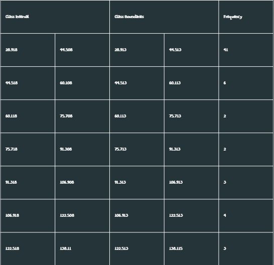
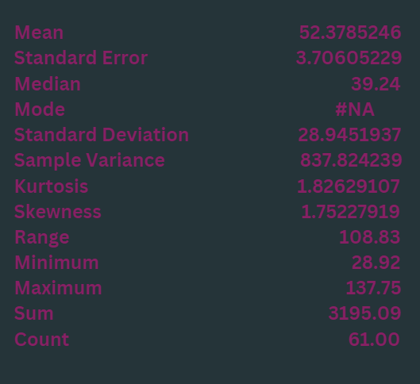
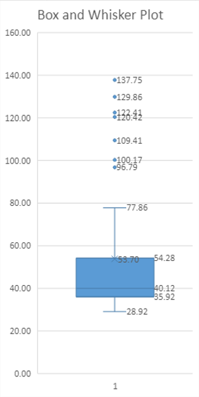

Summary Statistics
Time spent with friends is vital for social connection, emotional support, and stress reduction, which collectively enhance your overall well-being and happiness. These relationships foster personal growth and diverse perspectives, helping you broaden your horizons and navigate life's challenges. Additionally, maintaining strong friendships has been linked to better mental and physical health, contributing to a longer and more fulfilling life. In this page, we will show the statistics summary of the time spent(in minutes) on average.
Frequency data table:
Descriptive analysis:
The mean is 52.37, the median is 39.24, and the standard deviation is 28.94. This means that out of the 61 respondents, most of them spend an average of 39.24 minutes with their friends their whole lives. The median is used here again because it is more appropriate to report on it because of the asymmetrical distribution and because it is less affected by the outliers in the data. Though it is observed that most of the respondents spend their time with friends in the 28.92-44.52-minute range, the standard deviation is 30, which indicates a substantial degree of variability and spread in the dataset.
Box and Whisker plots:
The skewness is 1.62. The 1st quartile is 35.92. The median is 40.12. The 3rd quartile is 54.28. The shape of the distribution of time spent alone is asymmetrical and positively skewed or skewed to the right. There are multiple outliers that were observed, and most data observed were spread out with an IQR of 18.36.